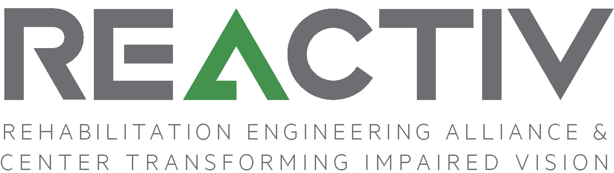
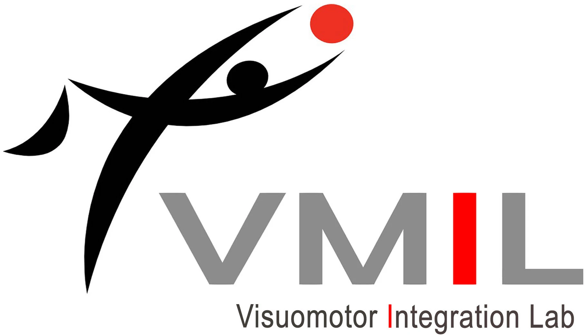
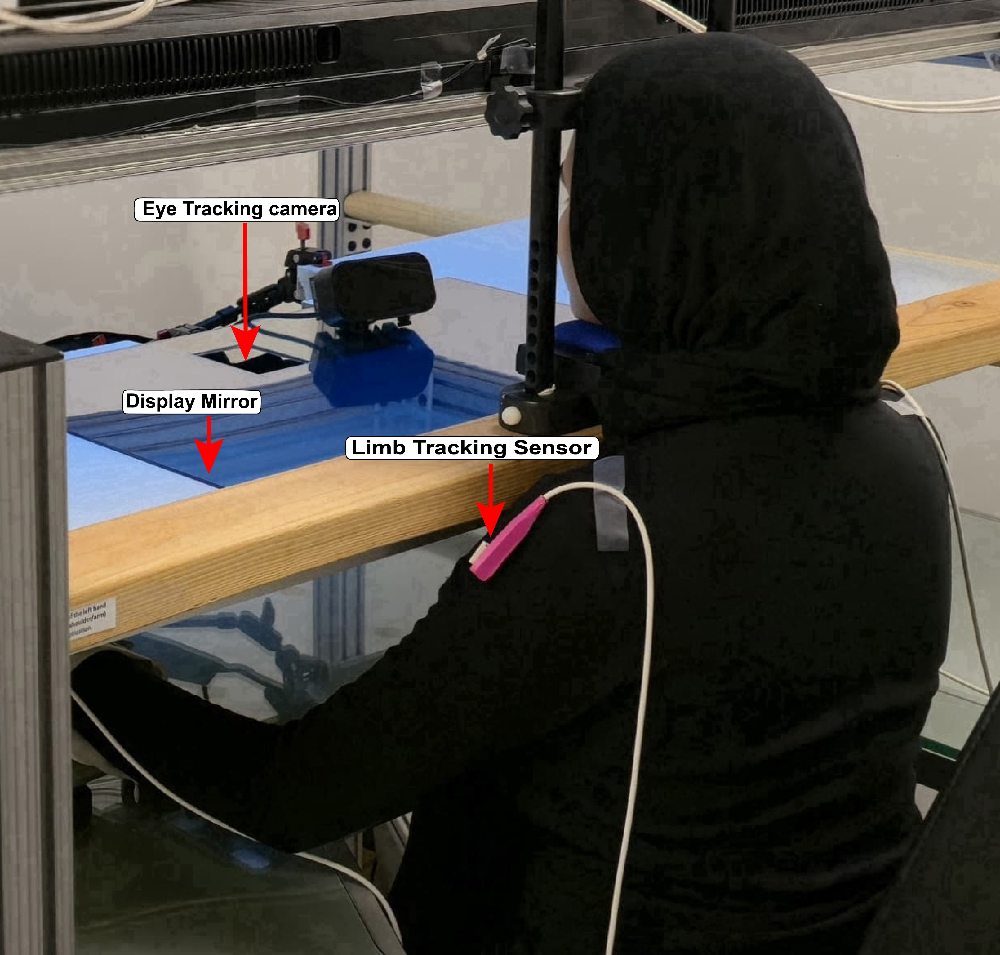

At the Rehabilitation Engineering Alliance & Center Transforming Impaired Vision (REACTIV) Laboratory, we imagine a world where technology removes, not reinforces, barriers. Our mission is to empower people with visual and other disabilities through accessible design, intelligent sensing, and adaptive systems.
We build tools that transform daily mobility into independence, bridging the gap between the physical and digital worlds through innovations that blend computer vision, human machine interaction, and inclusive engineering.

At the Visuomotor Integration Laboratory (VMIL), we explore how the brain unites vision and movement to shape purposeful action. Our research reveals the neural signatures of coordination, intention, and recovery, advancing new diagnostics and rehabilitation strategies for people affected by neurological conditions such as stroke.
By uncovering the principles of eye hand integration, we aim to translate scientific insight into therapies that restore function and independence.
Mobile, camera-based subway station guidance using GTFS and OCR. Provides real-time sign confirmation to support middle-mile navigation.
Learn moreGesture-controlled assistive system that announces selected objects. Uses 3D pointing to reduce cognitive load and improve spatial awareness.
Learn moreWearable haptic aid for obstacle negotiation using sensory substitution. Supports open-path guidance and depth-based vibrotactile feedback.
Learn moreVision-based localization and navigation without fixed infrastructure. Combines VPR, PnP heading estimation, and topometric mapping.
Learn moreReal-time curb detection using vision-based segmentation. Delivers early auditory warnings and orientation cues for safer walking.
Learn moreReal-time detection of construction hazards in urban environments. Integrates open-vocabulary CV, YOLO models, and OCR signage reading.
Learn moreMultimodal assistive system enabling independent shopping for people with blindness and low vision. Combines object detection, vision-language models, and spatial audio guidance.
Learn more
High-precision visuomotor assessment platform integrating eye tracking and kinematics. Quantifies eye–hand timing, variability, and online correction.
Learn moreInstrumented functional hand assessment combining eye tracking and motion capture. Extracts objective strategy and movement-quality biomarkers.
Learn moreComputer-vision–based dexterity assessment for Multiple Sclerosis. Fuses object detection and hand tracking to go beyond completion time.
Learn moreComputer-vision–based dexterity assessment for Multiple Sclerosis. Fuses object detection and hand tracking to go beyond completion time.
Learn more